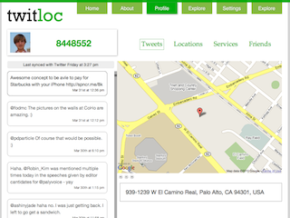
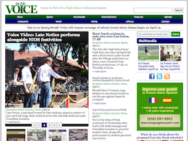
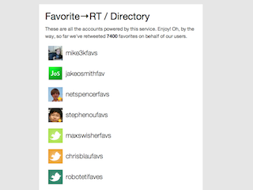

Waiting for iPad
Hello. My name is Spencer Schoeben.
I am a 16 year-old entrepreneur. CEO of Teens in Tech Networks and Founder of Twitloc. Billionaire in making.
- spencerschoeben@mac.com is online
-
Founder at Twitloc, Product Manager at Teens in Tech, Advisor at OneExtraLap
-

- Flickr
- Foursquare Checkins
- Blippy Purchases
- My Resume
- Listening to Matt Nathanson Radio
- Netspencerous
- netspencer is online
- My Tweets
- My Vimeo Videos
- My Blog
- My Yelp Reviews
- My Youtube Videos
My Projects
-
CEO / Teens in Tech
Teens in Tech Networks
I am the Chief Executive Office of Teens in Tech Networks, a company that helps teens create, distribute and promote content online.
We also host a popular conference and are the parent company of several teen startups.
-
Advisor / OneExtraLap
OneExtraLap
OneExtraLap is a social quizzing site created by Stephen Ou. It is currently in private beta—let me know if you want an invite.
I have advised Stephen along the way, suggesting features and giving him support.
-
Advisor / Klassio
Klassio
The fastest way of sharing things with more stuff & less fuss.
The product will be launching soon. You can request an invite on the site.
-

Founder / Twitloc
Twitloc
Twitloc is a secret little project that I'm working on that know one actually knows anything about.
It has to do with Twitter and location (as you can probably tell from the name), but that's about all I can tell you.
-

Webmaster / The Paly Voice
The Paly Voice
The Paly Voice is the award winning online student journalism website from Palo Alto High School.
I am currently in the process of converting the sites backend to being powered by Drupal
-
Webmaster / CASSY Bay Area
CASSY Bay Area
CASSY is a SF Bay Area nonprofit that partners with local schools to support students' social and emotional well-being through crisis intervention, ongoing counseling, and proactive mental health education.
I coded their site.
-

Creator / Favorite→RT
Favorite→RT
Favorite→RT is a little tool I created to help power my curation Twitter account—@netspencerfavs
It works by "automagically" retweeting anything that I favorite on my primary account.
The service now handles a handful of similar accounts for other people.